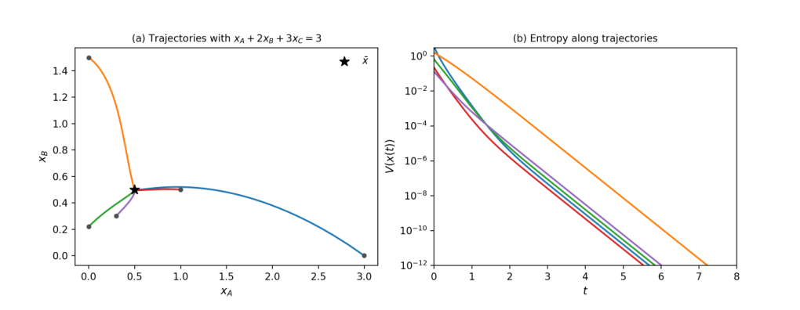

反应一直在发生
平衡是正逆速率相等，
而不是所有分子停止运动。
把一篇关于化学全局收敛的数学论文，
变成一场看得见、摸得着的反应实验。
在满足细致平衡的有限反应网络里，只要每种物质最初都存在，反应就会走向所在相容类中的唯一正平衡。
相容类可以理解为反应允许到达的一组状态，受守恒关系约束。不同相容类的终点可以不同。这里的“全局”，指该类中任意严格正的初始状态。
平衡是正逆速率相等，
而不是所有分子停止运动。
守恒约束相同、各浓度为正，
就可以比较不同的起跑线。
模拟给你直觉；数学证明
覆盖所有满足条件的起点。
沿用论文 §5.1 的三物种网络，改变初始配比，观察同一个终点。
实线：已演化轨迹 · 虚线：未来轨迹 · ★：平衡点
A、B、C 的浓度都趋近 0.5
严格使用论文 §5.1 的反应常数与五组初值。采用四阶 Runge–Kutta，内部步长 0.002，显示区间 0 ≤ t ≤ 8，每 0.01 保存一次。时间使用模型单位。原文 Figure 1 使用 LSODA，因此此处是独立数值重算，不是原图数据。数值模拟用于理解，不代替定理；能量图仅显示 V ≥ 10⁻¹² 的部分。
选择一个反应，看看它怎样改变三种浓度。
可以把 A、B、C 看作分别携带 1、2、3 个基本单位。两条反应都不改变总数。
将 b = 2a²、c = 4a³ 代入，总量是 a 的严格递增函数，所以正平衡只有一个。
红棕色的二氧化氮可以结合成近乎无色的四氧化二氮。固定温度、体积，在理想质量作用近似下，用这一个反应就能直观看到“改变起点，回到同一平衡”。
这是帮助理解的补充例子，不是原文 Figure 1。下面取无量纲教学参数 kf = kr = 1、T = 2；颜色深浅是概念示意，不代表实际吸光度或实验预测。
自由能下降，是线索；排除物种浓度趋零，才补上关键缺口。
“每个有限时刻浓度都大于零”不等于“永远远离零”。例如 e⁻ᵗ 始终为正，极限却是零。持久性要排除的就是后者。
这是 PDF 第 20 页的原始图，实验台重算了相同网络和初始状态。

左图：横轴 xA，纵轴 xB；圆点表示起点，星号表示平衡。右图：V(x(t)) 的对数纵轴，越低表示相对自由能越小。直线状下降并不意味着本文主定理给出了所有网络统一的收敛速率。
收录原文全部编号公式 (2.1)–(3.8)，并补充连接证明的关键表达式。
没有匹配的公式。试试“平衡”或“屏障”。
记号：x 为浓度向量，y、y′ 为反应复合物（计量向量），κ 为速率常数，S 为反应向量张成的空间。| · | 在原文中表示最大范数。展开卡片可查看原文页码与进一步解释。
三件事承担不同的任务。图上五条漂亮曲线，不能替代对所有初始状态的论证。
主定理是细致平衡系统的全局收敛。一般的全局吸引子猜想针对更广的复合平衡系统；论文 §5.4 讨论了扩展，但该节未纳入其报告的形式化范围。边界初值也不属于主定理。
按作者披露：Claude Opus 5.5 作研究决策，GPT 6 Astra 编写证明与 Lean 代码、执行构建并起草文稿；人类作者指导、审查并承担责任。持久性部分改编自其引用的 OpenAI 工作。
检查明确的定义与前提能否逻辑推出所写结论。作者报告约 9,300 行形式化工程，其中约 7,900 行为改编的持久性部分。本网页未重新构建该工程，也未独立核验相关文献的优先权。
Haoran Lv · Chengjin Ni · Manqin Wang · Shenli He / BitMiracle AI Lab
arXiv:2610.30808v1 · 本地 PDF 共 23 页